Control por teclado de los personajes del videojuego
Control por ratón la navegación entre los menús
Opciones del videojuego (resolución, sonido de movimientos, aspecto, pantalla completa y música)
Multiples escenarios y personajes
Control de jugador y CPU
Datos de los personajes en JSON, para facilitar futuras mejoras
Requisitos
Linux, Windows XP y superiores, Mac OSX 10.6 y superiores
Hardware minimo
32-bit dual core 2Ghz CPU with SSE2 support.
2 GB RAM
24 bits 1280×768 display
Mouse or trackpad
OpenGL 2.1 compatible graphics with 512 MB RAM
Hardware Recomendado
64-bit quad core CPU
8 GB RAM
Full HD display with 24 bit color
Three button mouse
OpenGL 3.2 compatible graphics with 2 GB RAM
Desarrollo
Metodología
Planificación
Recursos
Lenguajes de programación
Software
Metodología de desarrollo
Modelo por prototipo
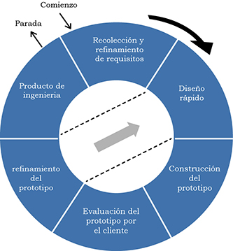
Planificación
Planificación (Gantt)
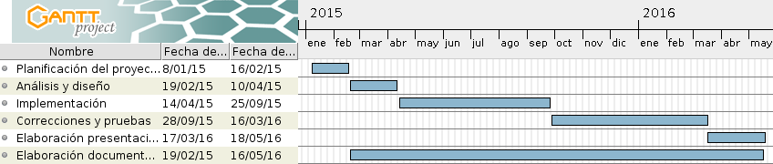
Recursos
Música
Modelos 3D
Imágenes
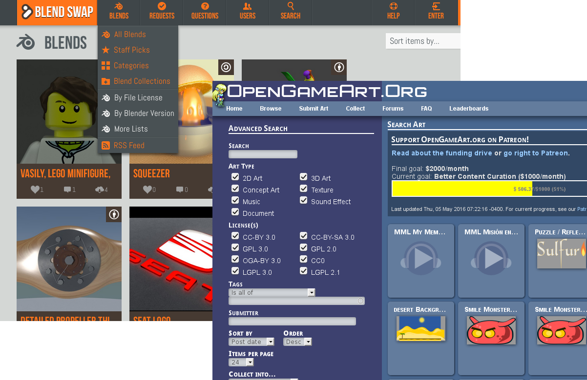
Lenguajes
Lenguajes
Software
Blender
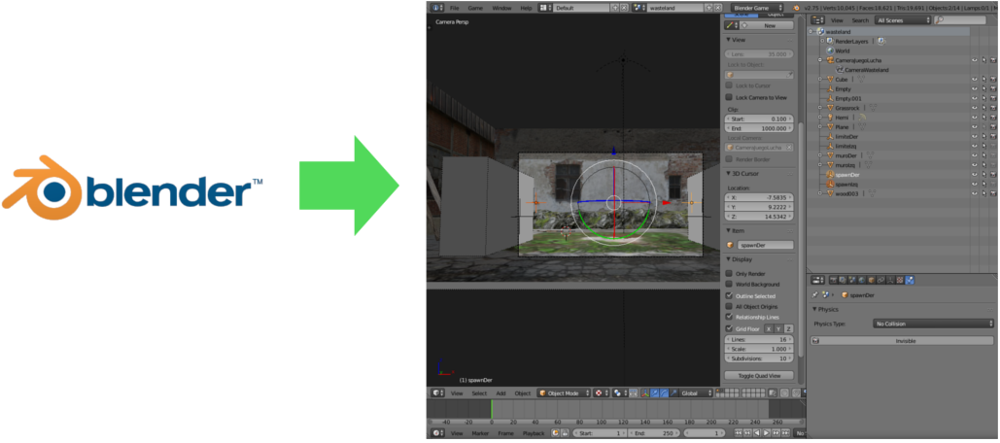
Diseño 3D, animaciones y motor del juego
SublimeText
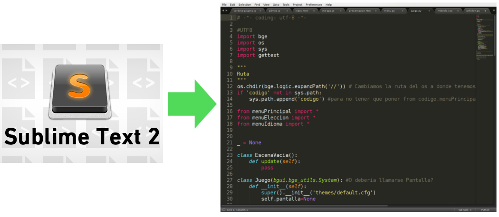
Escritura del código
Git
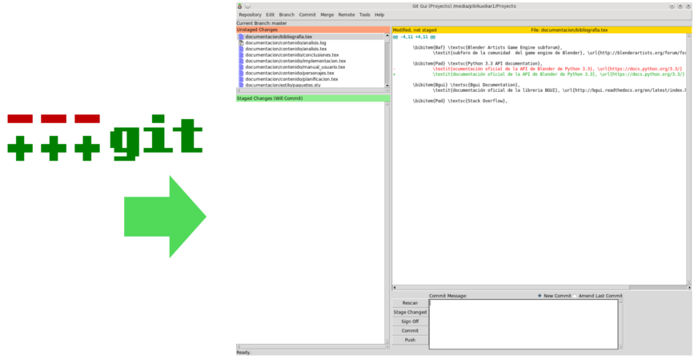
Control versiones
Poedit
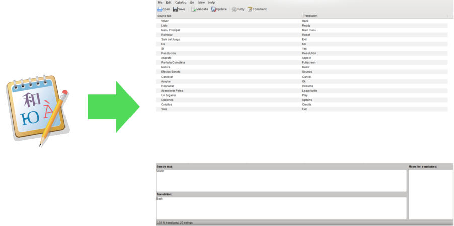
Traducciones de los textos del juego
Gimp
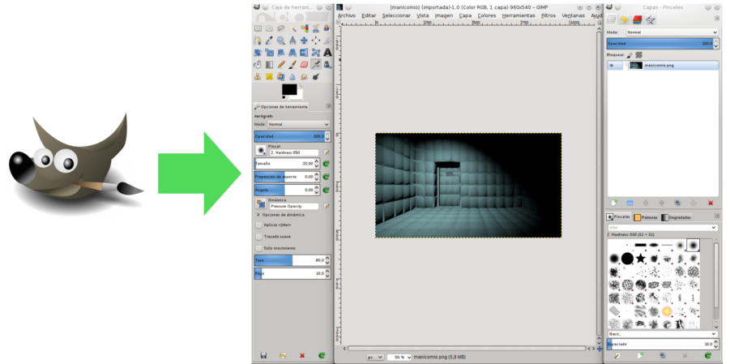
Retoque de imágenes 2D
Texmaker
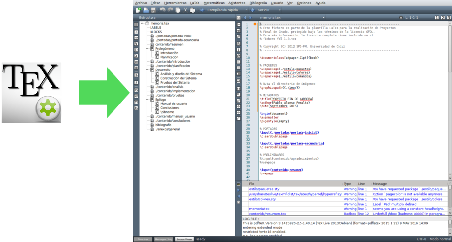
Editor y compilador latex
Pencil
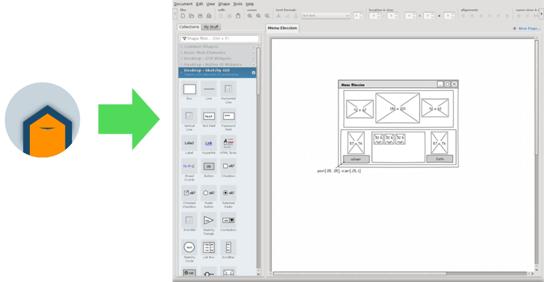
Bocetos de las pantallas
Dia
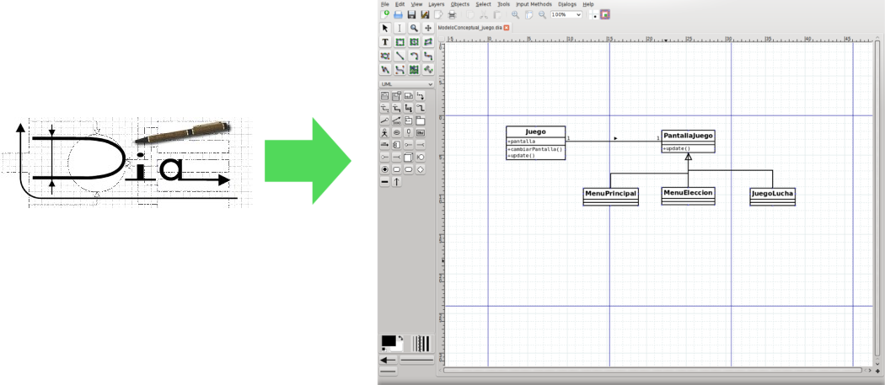
Imagenes del modelo UML
Implementación y problemas
Composición de los personajes
Reducción de polígonos a los modelos
Inteligencia Artificial implementada mediante una máquina de estados finito
Dificultades
Pruebas
Futuras mejoras
Conclusiones
Composición de los personajes
Malla
Textura
Esqueleto
Polígonos de colisión
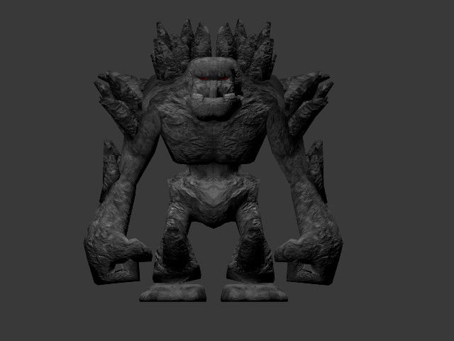
Malla
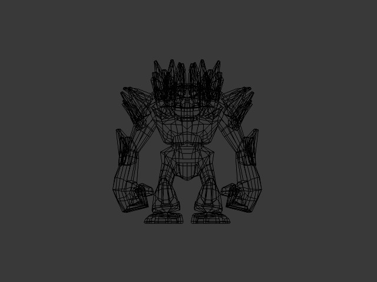
Textura
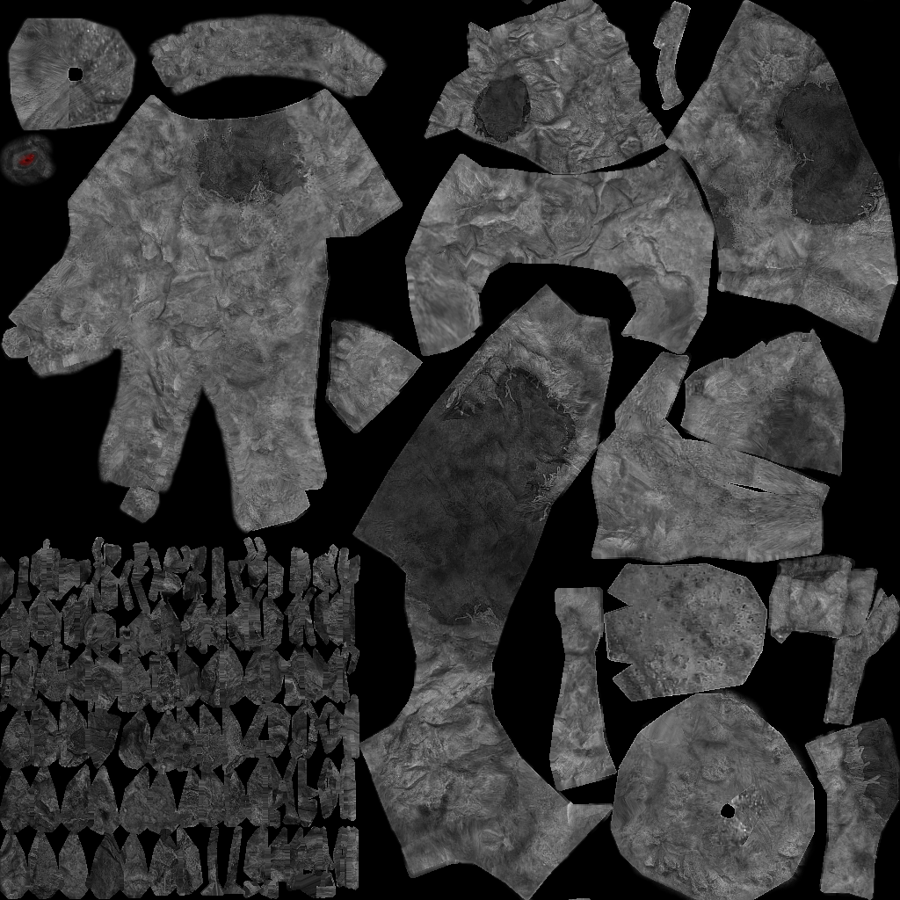
Esqueleto
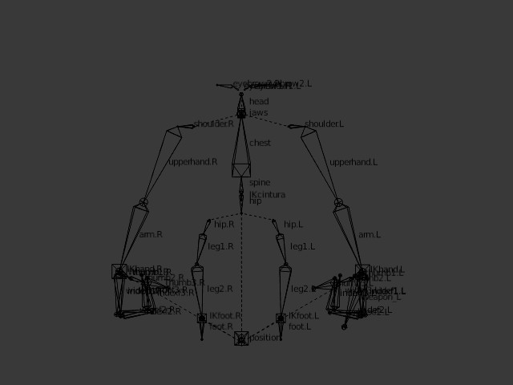
Huesos
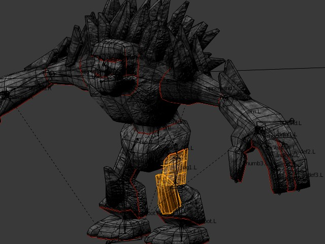
Animación por fotogramas claves
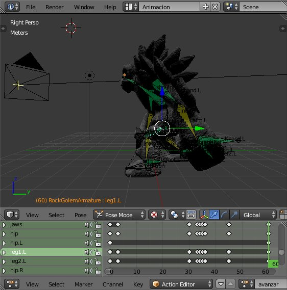
Colisiones luchador golpeado
Personajes "descompuesto" en piezas que son las que detecta el impacto de los golpes.
Reducción de polígonos a los modelos (I)
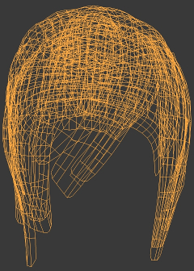
2869 vértices
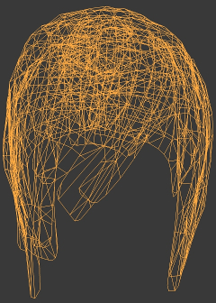
1283 vértices
Reducción de polígonos a los modelos (II)
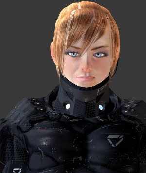
2869 vértices
1283 vértices
Composición de los escenarios
Cámara
Luz
Suelo, límite izquierdo y derecho
Puntos donde aparecen los personajes (spawn)
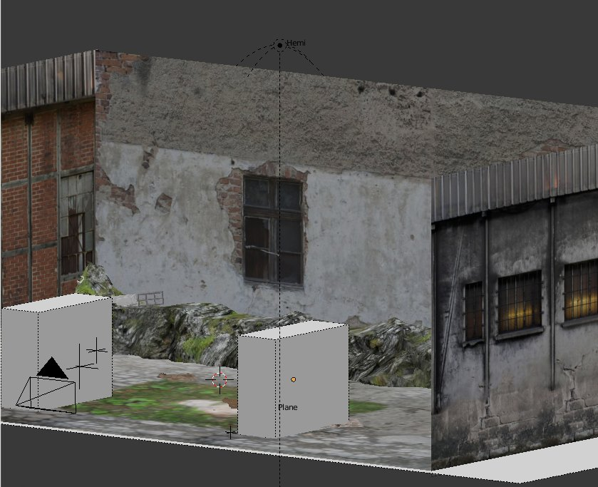
Dificultades
Sincronizar música con el comienzo del juego
Libload (función del motor blender para cargar dinámicamente modelos 3D)
Ragdoll o animación para KO
Animación personajes con movimientos de capturas
Calcular a que distancia el bot (personaje controlado por ordenador) alcanza al enemigo
Animación KO
Problemas
Animación KO pretendía ser creada a través de código, por que desde el editor tenia un bug en todas las versiones de blender
La implemente y funcionaba con una version de blender, pero esa versión tenia un bug con BGUI (libreria para la interfaz de usuario)
Tras preguntar tracker de bugs, lo pusieron en futuras correcciones, sin fecha determinada. Asi que finalmente decidí que estaba malgastando mucho tiempo para una animación que solo saldria al acabar el combate cuando el luchador quedará ko